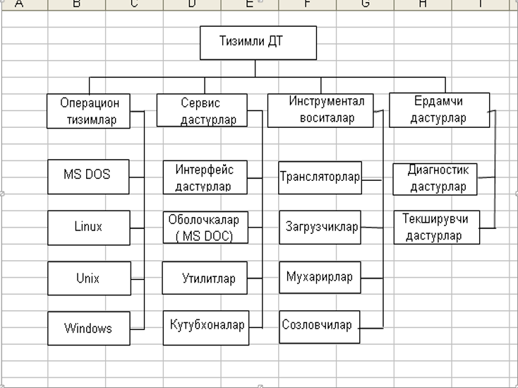
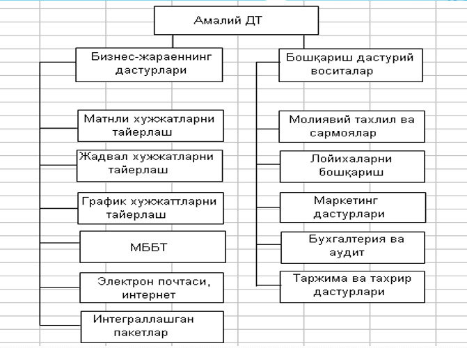

Дастурий таъминот (ДТ)
бу фойдаланувчининг вазифаларини ҳал қилиш учун зарур бўлган дастурлар ва ҳисоблаш техникасидан самарали фойдаланишга имкон берадиган, фойдаланувчини ишлаши қулайлигини ва меҳнат сарфини минималлаштиришни таъминлайдиган дастурлар мажмуасидир.
Тизимли дастурий таъминот қуйидагиларни ўз ичига олади
- операцион тизим
- сервис дастурлари
- инструментал дастурий воситалар
- ёрдамчи дастурлар


-
Методология – бу принциплар тизими, яьни дастурий таьминотни ишлаб чикариш куринишини аникловчи фикр, метод, усул ва воситалар якдиллигидир.
-
Методология – бу стандартлар реализатцияси. Стантартларнинг узи адаптация ва танловнинг эркинлигини таьминлайди
-
Аник нарсалар билан танланган методология оркали реализатция килинади ва яратилган дастурий таьминотнинг кенг самарали методикаси мавжуд
-
Аник методологиянинг танлови команданинг хажмига лойиханинг спецификацияси ва мураккаблиги, компаниядаги боскичнинг мустахкамлигига ва мутанослиблиги ва ходимларнинг сифатига боглик.
-
Дастурий таьминотнинг методологияси - ишлаб чикарувчи бошқарувининг ядро теориясини акс этади.
-
Маьлумотлар методологияси - келажакни деталли режалаштирилганлиги билан боглик. Режалаштирилган вазифалар ва ресурслар лойихаси узок муддатга эга булиб, команда узгаришларга кийнчилик билан жавоб беради.